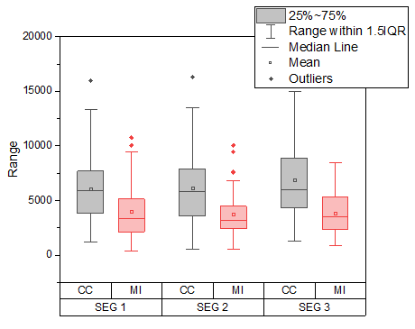
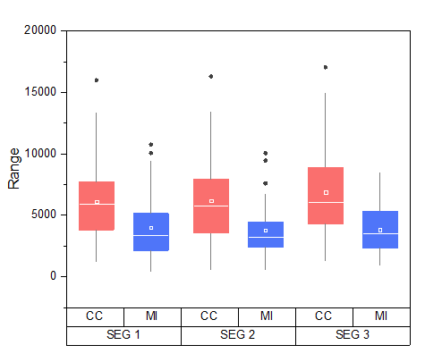

グループ化ボックスチャート
grouped-box-plot
概要
Originでは、（インデックスデータまたは素データによるグループ化ボックスチャートを作成できます。素データは、複数のデータ列として配置されており、それらは列ラベル列（複数可）に従ってグループ化され、一方、インデックスデータは1つのデータ列と、1つまたは複数のグループ列とにより配置されています。
グループボックスチャートが作図されると、ボックスチャートや軸に対して多くの設定オプションが提供されます。素データから作成しても、インデックスデータから作成してもグループ化ボックスチャートの編集オプションは同じです。
必要なOriginのバージョン: Origin 2015 SR0以降
学習する項目
このチュートリアルでは、以下の項目について説明します。
- インデックスデータによりグループ化されたボックスチャートを作成
- 素データによりグループ化されたボックスチャートを作成
- 作図の詳細ダイアログを使ってボックスチャートを編集する
- 表形式の軸刻みラベルをカスタマイズ
ステップ
インデックスデータによりグループ化されたボックスチャート
- ヘルプ: ラーニングセンター メニューを選択、または キーボードのF11 キーを押して、ラーニングセンターを開きます。グラフサンプルを選択し、カテゴリーのドロップダウンリストからボックスチャートを選択します。下図のように、サムネイルをダブルクリックして、"Box Charts - Grouped Box Chart with Color Indexed Data Points"を開きます。
- このチュートリアルは、チュートリアルデータプロジェクト<Origin EXE フォルダ>\Samples\TutorialData.opjのGrouped Box Plot and Axis Tick Tableフォルダと関連しています。
- ワークブックBook10のCC.MI-Index ワークシートのデータはインデックスデータです。列Eはデータ列、列CとDはグループ列として使用します。列Eを選択して、メニューから作図: カテゴリカル: グループ化したボックスチャート‐インデックスデータと操作し、plot_gboxindexedダイアログを開きます。
- ダイアログで、グループリストの右にある三角形のボタンをクリックし、C列、D列を選択します。
- OKをクリックすると、グループ化ボックスチャートが作成されます。グラフは下図のようになります。ワークブックには新しい結果シートが追加されます。
- 
 | グループ化した箱ひげ図を作成するチュートリアルは例 2を参照してください。
|
作図の詳細ダイアログによる編集
- インデックスデータから作図したグラフをアクティブにします。凡例を選択し、削除します。
- メニューから、フォーマット：作図の詳細（プロット属性）を選択し、作図の詳細ダイアログボックスを開きます。外れ値タブでスタイルの編集が可能になるので、以下のように設定します。
- 棒の間隔タブをクリックし、サブグループ間の間隔(%)を5にします。線タブで色を以下のように変更します。
- パーセンタイルタブで、最大/99％/1％/最小をなしにするには、クリックして開くシンボルマップの一番最後のオプションを選択します。以下のように設定します。
- グループタブの境界の色の行で、推移を1つずつ、サブグループをサブグループ内に設定します。
- 詳細の隣にある...ボタンをクリックして推移リストエディタを開き、最初の色をクリックして色の選択を開き、カスタムコントロールの下にある空の色ボックスクリックして、色ダイアログを開きます。開いたダイアログでHSL値 (色合い=0, 鮮やかさ=240, 明るさ=180)を入力して、カスタムカラーの定義できます。OK をクリックして、ダイアログを閉じます。 2つ目の色も同様に推移リストエディタダイアログで、色合い = 160、鮮やかさ = 240を入力して設定します。OKボタンをクリックして推移リストエディタを閉じます。
- ボックスの色では、カラーリストの最初の2色を、前のステップで定義した色に設定します。その後、推移を1つずつ、サブグループをサブグループ内に設定します。
- OK をクリックして設定を適用し、作図の詳細ダイアログを閉じます。ボックス上でクリックして表示されるミニツールバーで「間隔を小さく」ボタンを3回クリックしてサブグループ間の間隔を設定します。

- グラフは下図のようになります。
- 
軸ダイアログによる編集
前のセクションで編集したグラフを使用します。
- X 軸のラベル表の下の行でクリックして、ミニツールバーの反対へ移動ボタンをクリックして、上軸側に移動します。
- 下軸のラベル表をクリックして、フォントサイズを22に変更します。また、上軸の目盛ラベルをクリックし開くミニツールバーを使てフォントサイズを24に変更します。
- 下の軸をダブルクリックして、軸ダイアログボックスを開きます。目盛ラベルタブを開き、左パネルで下1を選択してから表サブタブを開きます。そして、下図のように表のフォーマットを設定します。
- 目盛ラベルタブを開き、左パネルで上1を選択してから表サブタブを開きます。そして、下図のように表のフォーマットを設定します。
- 左アイコン（Y軸用の設定）をクリックして、Y 軸目盛の設定を以下のようにします。
-
- 適用ボタンをクリックします。主グリッド線と副グリッド線を使用するには、グリッドタブを開き、X(垂直)とY(水平)軸を以下の図のように設定します。
- OKボタンをクリックしてこの軸ダイアログを閉じます。最終的に、下図のようなグラフになります。
| クリックして表ラベルを選択し、キーボードの矢印キーを使用してそれらを微調整することができます。
|